Crab SED v6 64748 reselect44 - Scheme R - Empirical-CDF Asimov-rOpt Poisson-Unbinned Background
Scheme R - Empirical-CDF Asimov-rOpt with Grid-Free Poisson Background. v6 chain for v6_64748_nhit100_reselect44_split56_miss030_empirical_cdf_asimov_ropt_poisson_unbinned, reusing the v6_64748_nhit100_highEplus1_split56 nominal inputs and Stage C event reduction. The first Nhit bin is [100,200); >=6 remains a diagnostic tail outside Stage F/G.
Empirical CDF + Actual-Background Aperture Optimization
Z_A(r) >= 0.99 max Z_A. The signal curve is forward-folded from the cumulative r x E_true x theta MC response with the current LogPar spectrum and the measured Crab exposure. The background curve is the analytic centered-disk integral of the cell's Stage D continuous Poisson surface.The complete MC angular-error distribution is retained. Catastrophic reconstruction tails therefore reduce F(r), but the optimizer is not forced to enlarge the aperture to reach a fixed 68% or 71.3% containment. The resulting empirical containment is an output, not a target. Stage A is rebuilt with the adopted angular cut and Stage E containment is fixed to one, so the aperture efficiency enters the SED response exactly once.
| Quantity | Value |
|---|---|
| Radius scan | 0.20-2.00 deg in 0.01 deg steps |
| Production rule | smallest r with Z_A(r) >= 0.99 max Z_A |
| Optimized cells | 44; selector unchanged |
| Final r_opt min / median / max [deg] | 0.2 / 0.335 / 1.76 |
| Final containment min / median / max | 0.32671 / 0.63609 / 0.87728 |
| Lower-bound cells | 86, 87, 88 |
| Iteration max / median |delta r| [deg] | 0.04 / 0 |
| Initial LogPar (phi0, alpha, beta) | 2.43706e-12, 2.7391, 0.10028 |
| Updated LogPar input (phi0, alpha, beta) | 2.23457e-12, 2.6847, 0.10086 |
| Final fitted LogPar (phi0, alpha, beta) | 2.22296e-12, 2.6825, 0.098096 |
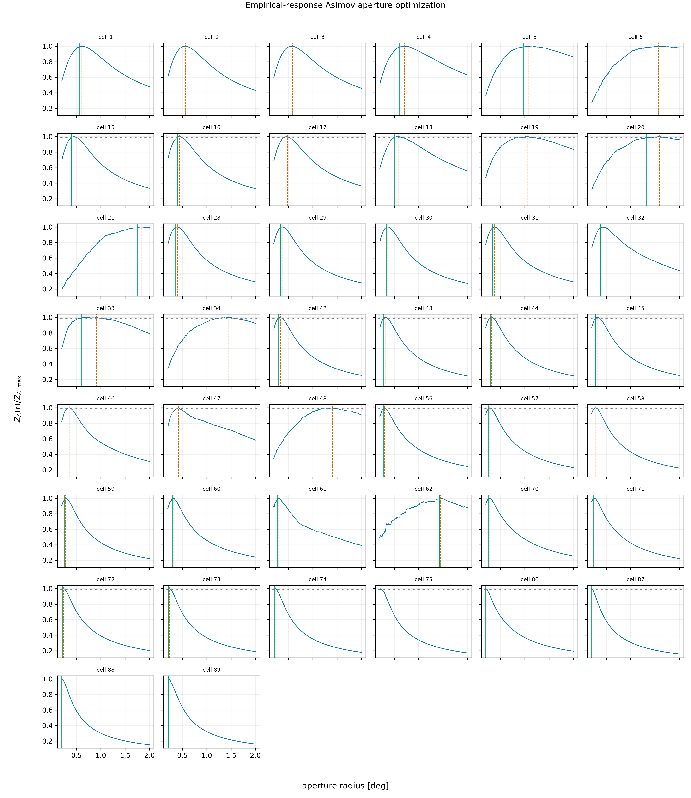
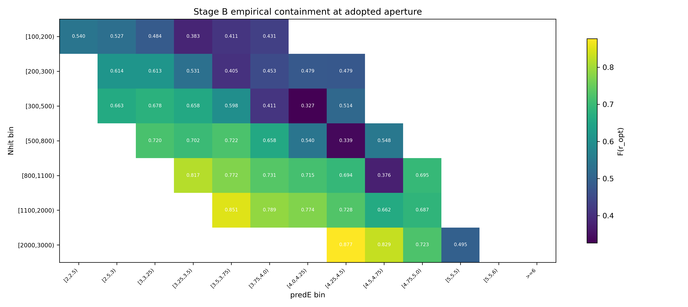
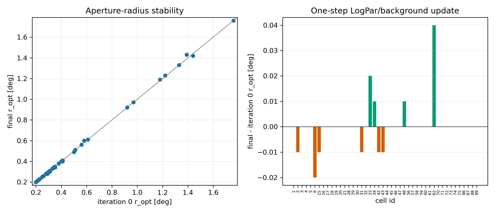
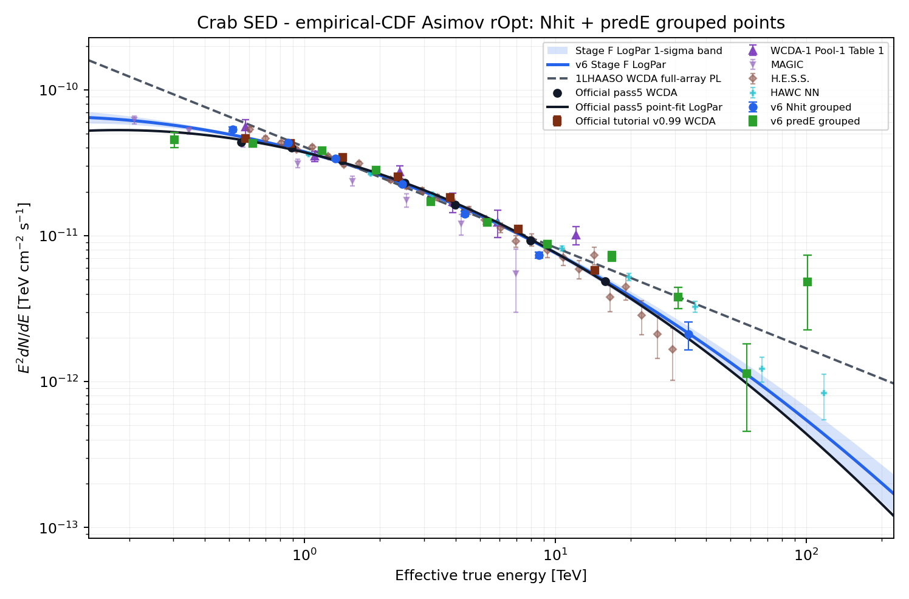
Final Per-Cell Aperture Contract
| Cell | Nhit | predE | old r_opt | exact max r | adopted r_opt | F(r_opt) | Z/max Z | S(r_opt) | B(r_opt) |
|---|---|---|---|---|---|---|---|---|---|
| 1 | [100,200) | [2,2.5) | 0.83374 | 0.61 | 0.56 | 0.5404 | 0.99288 | 4041.1 | 70790 |
| 2 | [100,200) | [2.5,3) | 0.73605 | 0.56 | 0.49 | 0.52676 | 0.99001 | 7189 | 66571 |
| 3 | [100,200) | [3,3.25) | 0.75465 | 0.58 | 0.51 | 0.48374 | 0.99284 | 1045.6 | 13670 |
| 4 | [100,200) | [3.25,3.5) | 0.99299 | 0.71 | 0.61 | 0.38345 | 0.99004 | 341.38 | 9258.8 |
| 5 | [100,200) | [3.5,3.75) | 1.3109 | 1.07 | 0.97 | 0.41133 | 0.99103 | 215.01 | 11944 |
| 6 | [100,200) | [3.75,4.0) | 1.7696 | 1.57 | 1.42 | 0.43134 | 0.99027 | 127.99 | 11590 |
| 15 | [200,300) | [2.5,3) | 0.53987 | 0.45 | 0.4 | 0.61407 | 0.99002 | 4313.1 | 10672 |
| 16 | [200,300) | [3,3.25) | 0.52369 | 0.44 | 0.4 | 0.61338 | 0.99344 | 1999.4 | 5404.3 |
| 17 | [200,300) | [3.25,3.5) | 0.58494 | 0.48 | 0.41 | 0.53056 | 0.99036 | 549.85 | 2506.7 |
| 18 | [200,300) | [3.5,3.75) | 0.94506 | 0.59 | 0.51 | 0.405 | 0.99015 | 169.68 | 1737.2 |
| 19 | [200,300) | [3.75,4.0) | 1.223 | 1.05 | 0.92 | 0.45314 | 0.99034 | 116.72 | 3172.9 |
| 20 | [200,300) | [4.0,4.25) | 1.6013 | 1.59 | 1.33 | 0.47945 | 0.99001 | 64.749 | 2854.7 |
| 21 | [200,300) | [4.25,4.5) | 2.2339 | 1.83 | 1.76 | 0.4791 | 0.99005 | 29.644 | 1089.1 |
| 28 | [300,500) | [2.5,3) | 0.43681 | 0.4 | 0.35 | 0.66274 | 0.99426 | 1422.2 | 1502.4 |
| 29 | [300,500) | [3,3.25) | 0.41834 | 0.37 | 0.34 | 0.67813 | 0.99454 | 2978.8 | 2772.1 |
| 30 | [300,500) | [3.25,3.5) | 0.39645 | 0.36 | 0.33 | 0.65816 | 0.99366 | 1972.3 | 2021.4 |
| 31 | [300,500) | [3.5,3.75) | 0.41691 | 0.38 | 0.34 | 0.5982 | 0.99018 | 488.37 | 745.07 |
| 32 | [300,500) | [3.75,4.0) | 0.84549 | 0.41 | 0.38 | 0.41087 | 0.99214 | 106.12 | 365.71 |
| 33 | [300,500) | [4.0,4.25) | 1.2364 | 0.91 | 0.6 | 0.32671 | 0.99143 | 44.722 | 416.88 |
| 34 | [300,500) | [4.25,4.5) | 1.5143 | 1.45 | 1.23 | 0.51352 | 0.99021 | 33.551 | 549.47 |
| 42 | [500,800) | [3,3.25) | 0.3059 | 0.34 | 0.3 | 0.71959 | 0.99027 | 426.05 | 212.93 |
| 43 | [500,800) | [3.25,3.5) | 0.31435 | 0.32 | 0.28 | 0.7016 | 0.99064 | 1491.9 | 671.19 |
| 44 | [500,800) | [3.5,3.75) | 0.306 | 0.32 | 0.29 | 0.72237 | 0.99442 | 1391.4 | 618.94 |
| 45 | [500,800) | [3.75,4.0) | 0.31613 | 0.31 | 0.28 | 0.65811 | 0.99505 | 376.32 | 188.57 |
| 46 | [500,800) | [4.0,4.25) | 0.62845 | 0.35 | 0.31 | 0.53973 | 0.99169 | 56.249 | 54.176 |
| 47 | [500,800) | [4.25,4.5) | 1.2776 | 0.42 | 0.41 | 0.33926 | 0.99354 | 11.599 | 28.199 |
| 48 | [500,800) | [4.5,4.75) | 1.4002 | 1.4 | 1.19 | 0.54817 | 0.99589 | 8.3707 | 59.919 |
| 56 | [800,1100) | [3.25,3.5) | 0.25941 | 0.29 | 0.28 | 0.81689 | 0.99368 | 137.13 | 28.642 |
| 57 | [800,1100) | [3.5,3.75) | 0.24923 | 0.28 | 0.26 | 0.77216 | 0.99053 | 504.51 | 129.73 |
| 58 | [800,1100) | [3.75,4.0) | 0.257 | 0.27 | 0.25 | 0.7312 | 0.99074 | 489.93 | 152.53 |
| 59 | [800,1100) | [4.0,4.25) | 0.2656 | 0.27 | 0.26 | 0.71468 | 0.99214 | 132.45 | 61.978 |
| 60 | [800,1100) | [4.25,4.5) | 0.35078 | 0.32 | 0.3 | 0.6939 | 0.99727 | 15.762 | 14.445 |
| 61 | [800,1100) | [4.5,4.75) | 1.2175 | 0.3 | 0.28 | 0.37579 | 0.99615 | 1.4891 | 1.7901 |
| 62 | [800,1100) | [4.75,5.0) | 1.5368 | 1.45 | 1.43 | 0.69455 | 0.99541 | 0.89519 | 5.6235 |
| 70 | [1100,2000) | [3.5,3.75) | 0.22426 | 0.28 | 0.26 | 0.8505 | 0.99443 | 74.168 | 7.6951 |
| 71 | [1100,2000) | [3.75,4.0) | 0.21089 | 0.24 | 0.23 | 0.78883 | 0.99137 | 272.88 | 42.232 |
| 72 | [1100,2000) | [4.0,4.25) | 0.21612 | 0.23 | 0.22 | 0.77396 | 0.99426 | 300.05 | 62.654 |
| 73 | [1100,2000) | [4.25,4.5) | 0.21906 | 0.23 | 0.21 | 0.72835 | 0.99489 | 107.49 | 34.549 |
| 74 | [1100,2000) | [4.5,4.75) | 0.22867 | 0.24 | 0.21 | 0.6624 | 0.99421 | 18.226 | 11.205 |
| 75 | [1100,2000) | [4.75,5.0) | 1.58 | 0.22 | 0.22 | 0.68709 | 1 | 1.8985 | 3.5493 |
| 86 | [2000,3000) | [4.25,4.5) | 0.17239 | 0.2 | 0.2 | 0.87728 | 1 | 14.154 | 1.47 |
| 87 | [2000,3000) | [4.5,4.75) | 0.19312 | 0.2 | 0.2 | 0.82915 | 1 | 14.739 | 5.48 |
| 88 | [2000,3000) | [4.75,5.0) | 0.22297 | 0.2 | 0.2 | 0.72341 | 1 | 7.8816 | 11.327 |
| 89 | [2000,3000) | [5,5.5) | 0.26098 | 0.22 | 0.21 | 0.4955 | 0.99436 | 1.3075 | 14.81 |
Empirical-Aperture Validation
| Check | Status | Evidence |
|---|---|---|
| 44-cell selector frozen | PASSED | [1, 2, 3, 4, 5, 6, 15, 16, 17, 18, 19, 20, 21, 28, 29, 30, 31, 32, 33, 34, 42, 43, 44, 45, 46, 47, 48, 56, 57, 58, 59, 60, 61, 62, 70, 71, 72, 73, 74, 75, 86, 87, 88, 89] |
| aperture response matches final Stage B | PASSED | selected-cell radii |
| Stage D aperture matches final Stage B | PASSED | selected-cell radii |
| Stage E containment applied exactly zero extra times | PASSED | all containment_r_opt == 1 |
| 99% smallest-radius rule | PASSED | all adopted Z/max(Z) >= 0.99 |
| no upper scan-boundary optimum | PASSED | [] |
| Stage G contains both groupings | PASSED | ['nhit', 'predE'] |
| final LogPar fit valid | PASSED | {'phi0': 2.2229581840400047e-12, 'alpha': 2.6824699537473795, 'beta': 0.0980961131395305} |
| required Stage G overlay exists | PASSED | apply/report/assets/v6-64748-nhit100-reselect44-split56-miss030-empirical-cdf-asimov-ropt/v6_64748_nhit100_reselect44_split56_miss030_empirical_cdf_asimov_ropt_stage_g_external_overlay_with_predE.png |
Implementation commit: 086a906439251a28b3ba439d5f95bb475fecc349. Iteration-0 optimizer: apply/output/stage_b_v6_64748_nhit100_reselect44_split56_miss030_empirical_cdf_asimov_ropt_iter0/runs/v6_64748_nhit100_reselect44_split56_miss030_empirical_cdf_asimov_ropt_iter0_stage_b_psf/psf_v6_64748_nhit100_reselect44_split56_miss030_empirical_cdf_asimov_ropt_iter0_metadata.json. Final optimizer: apply/output/stage_b_v6_64748_nhit100_reselect44_split56_miss030_empirical_cdf_asimov_ropt/runs/v6_64748_nhit100_reselect44_split56_miss030_empirical_cdf_asimov_ropt_stage_b_psf/psf_v6_64748_nhit100_reselect44_split56_miss030_empirical_cdf_asimov_ropt_metadata.json.
Executive Check
| Gate | Status | Evidence |
|---|---|---|
| run id | pass | v6_64748_nhit100_reselect44_split56_miss030_empirical_cdf_asimov_ropt |
| Nhit binning | pass | [100,200) |
| tail policy | pass | 7 >=6 tail cells, 0 included |
| selector | pass | 44 fit cells; 10 forced in, 5 forced out |
| selector 75/90 swap | pass | cell 75 included=True; cell 90 included=False; total=44 |
| Stage C files | pass | 3,969 processed, missing time 0, entry mismatch 0 |
| Stage E signal | pass | formal sigma 72.999 |
| Stage F fit | pass | preferred logpar |
| Stage G points | pass | 7 Nhit points, 11 predE points |
| fixed containment contract | pass | not requested for this report |
| metadata pollution | passed | 0 legacy main-input path/token offenders |
Slurm Jobs
All heavy recomputation stages are intended to run through the Slurm dependency chain. This table is populated from PIPELINE_JOB_IDS when available.
| Stage | Job | State | Elapsed | Exit | Name |
|---|---|---|---|---|---|
| opt0 | 65329 | COMPLETED | 00:18:58 | 0:0 | v6_empirical_ropt_i0 |
| iter0 | 65334 | COMPLETED | 00:18:02 | 0:0 | v6_empirical_pipe_i0 |
| final | 65335 | FAILED | 00:20:58 | 1:0 | v6_empirical_final |
| report | 65336 | RUNNING | 00:02:56 | 0:0 | v6_empirical_report |
Inputs And Outputs
The main chain uses the 64748 observation eval root and its recovered-time tree. The response, PSF, aperture response, fit, and SED products are all under the new run namespace.
| Field | Value |
|---|---|
| Experiment id | v6_64748_nhit100_reselect44_split56_miss030_empirical_cdf_asimov_ropt_poisson_unbinned |
| Scheme | R - Scheme R - Empirical-CDF Asimov-rOpt with Grid-Free Poisson Background |
| Input commit SHA | 086a906439251a28b3ba439d5f95bb475fecc349 |
| Analysis response | /mnt/mydisk/server/projects/energy_reconstruction/apply/output/stage_a_v6_64748_nhit100_reselect44_split56_miss030_empirical_cdf_asimov_ropt_aperture_conditioned/response_2d_v6_64748_nhit100_reselect44_split56_miss030_empirical_cdf_asimov_ropt_aperture_conditioned.npz |
| Observation root | /mnt/mydisk/WCDA_observation_eval_64748 |
| Recovered time root | /mnt/mydisk/WCDA_observation_eval_64748/recovered_time |
| MC candidate cache | /mnt/mydisk/WCDA_simulation_binned_response_v6_64748_nhit100_highEplus1_split56_candidate |
| Model run dir | /mnt/mydisk/server/projects/energy_reconstruction/runs/theta_recoxy_position_embed_noemax_no_core_cut_64748 |
| Fit selector | ../config/cell_selector_v6_64748_nhit100_reselect44_split56_miss030_fit.csv |
| Stage C input entries | 254,436,994 |
| After configured-cell selection | 113,938,262 |
| Stage | Primary output |
|---|---|
| Prepare/cache | /mnt/mydisk/WCDA_simulation_binned_response_v6_64748_nhit100_highEplus1_split56_candidate |
| Stage A response | apply/output/stage_a_v6_64748_nhit100_highEplus1_split56 (reused) |
| Stage B PSF | apply/output/stage_b_v6_64748_nhit100_reselect44_split56_miss030_empirical_cdf_asimov_ropt |
| Analysis response | apply/output/stage_a_v6_64748_nhit100_reselect44_split56_miss030_empirical_cdf_asimov_ropt_aperture_conditioned |
| Stage C observation | apply/output/stage_c_v6_64748_nhit100_highEplus1_split56 (reused) |
| Stage D background | apply/output/stage_d_v6_64748_nhit100_reselect44_split56_miss030_empirical_cdf_asimov_ropt_annnorm |
| Stage E signal | apply/output/v6_64748_nhit100_reselect44_split56_miss030_empirical_cdf_asimov_ropt_poisson_unbinned/final/stage_e/runs/stage_e |
| Stage F fit | apply/output/v6_64748_nhit100_reselect44_split56_miss030_empirical_cdf_asimov_ropt_poisson_unbinned/final/stage_f/runs/stage_f |
| Stage G SED | apply/output/v6_64748_nhit100_reselect44_split56_miss030_empirical_cdf_asimov_ropt_poisson_unbinned/final/stage_g/runs/stage_g |
Selector Rule
preserve original MC-ridge fit cells; add at most one adjacent higher predE bin per Nhit; apply explicit include/exclude overrides; never include >=6 tail cells in Stage F/G
| Nhit | Status | Candidate | MC count | PSF gate | Reasons |
|---|---|---|---|---|---|
[100,200) | included_highEplus1 | [3.25,3.5) cell 4 | 54,366 | 1 | pass |
[200,300) | included_highEplus1 | [3.75,4.0) cell 19 | 17,909 | 1 | pass |
[300,500) | rejected_highEplus1_probe | [5.5,6) cell 38 | 13,883 | 0 | containment_warning |
[500,800) | diagnostic_tail_only | >=6 cell 52 | 158 | 0 | tail_ge6_excluded_from_main_fit |
[800,1100) | rejected_highEplus1_probe | [5.5,6) cell 64 | 3,211 | 0 | containment_warning |
[1100,2000) | rejected_highEplus1_probe | [4.75,5.0) cell 75 | 2,279 | 0 | valid_events_le_0;effective_events_lt_200;core_fit_effective_events_lt_200;theta_missing_mass_gt_0.3;containment_warning;angle_check_warning |
[2000,3000) | diagnostic_tail_only | >=6 cell 91 | 0 | 0 | tail_ge6_excluded_from_main_fit |
Included highEplus1 cells
| Cell | Nhit | predE | MC count | PSF reason |
|---|---|---|---|---|
| 4 | [100,200) | [3.25,3.5) | 54,366 | pass |
| 19 | [200,300) | [3.75,4.0) | 17,909 | pass |
Rejected highEplus1 probes
| Cell | Nhit | predE | MC count | Reason |
|---|---|---|---|---|
| 38 | [300,500) | [5.5,6) | 13,883 | containment_warning |
| 64 | [800,1100) | [5.5,6) | 3,211 | containment_warning |
Explicit selector overrides
| Action | Cell | Nhit | predE | PSF status |
|---|---|---|---|---|
| include | 5 | [100,200) | [3.5,3.75) | containment_warning |
| include | 6 | [100,200) | [3.75,4.0) | containment_warning |
| include | 20 | [200,300) | [4.0,4.25) | pass |
| include | 21 | [200,300) | [4.25,4.5) | containment_warning |
| include | 34 | [300,500) | [4.25,4.5) | pass |
| include | 47 | [500,800) | [4.25,4.5) | pass |
| include | 48 | [500,800) | [4.5,4.75) | pass |
| include | 61 | [800,1100) | [4.5,4.75) | pass |
| include | 62 | [800,1100) | [4.75,5.0) | pass |
| include | 75 | [1100,2000) | [4.75,5.0) | valid_events_le_0;effective_events_lt_200;core_fit_effective_events_lt_200;theta_missing_mass_gt_0.3;containment_warning;angle_check_warning |
| exclude | 37 | [300,500) | [5,5.5) | containment_warning |
| exclude | 50 | [500,800) | [5,5.5) | containment_warning |
| exclude | 51 | [500,800) | [5.5,6) | containment_warning |
| exclude | 63 | [800,1100) | [5,5.5) | pass |
| exclude | 90 | [2000,3000) | [5.5,6) | valid_events_le_0;effective_events_lt_200;core_fit_effective_events_lt_200;theta_missing_mass_gt_0.3;containment_warning;angle_check_warning |
Stage C Time Audit
Stage C used /mnt/mydisk/WCDA_observation_eval_64748/recovered_time. Missing-time and entry-mismatch rows are listed below when present.
| Metric | Value |
|---|---|
| Processed files | 3,969 |
| Missing time files | 0 |
| Entry mismatch files | 0 |
| Selected rows | 113,938,262 |
| Matched MJD min | 59579.667 |
| Matched MJD max | 59760.652 |
Stage A-B-D-E Diagnostics
Stage A nominal response is primary_thrown_response; Stage F/G use primary_thrown_aperture_conditioned_response under Scheme R - Empirical-CDF Asimov-rOpt with Grid-Free Poisson Background. Stage B wrote 91 formal PSF rows. Shared Stage B and Stage D figures are scheme-independent inputs copied into this report's asset directory. Figure labels use display IDs 1-84 after excluding the predE >= 6 tail column from numbering; stored data and metadata retain the original 91-cell internal IDs. The theta grid shows each cell's raw mc_weight-normalized distribution before Crab reweighting; orange shading marks Crab-positive theta bins without MC support. In the radial grid, purple profiles and dashed Rayleigh curves are diagnostic-only fits made without the formal true-energy cut when the formal profile is empty; they do not replace the Stage B PSF used by Stage A/F. Panels with no raw MC events are labeled explicitly. Pale green panels mark the 44 cells used by Stage F/G.
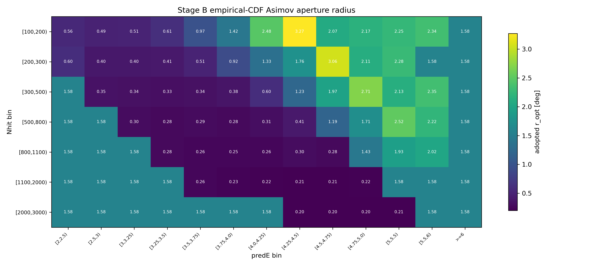


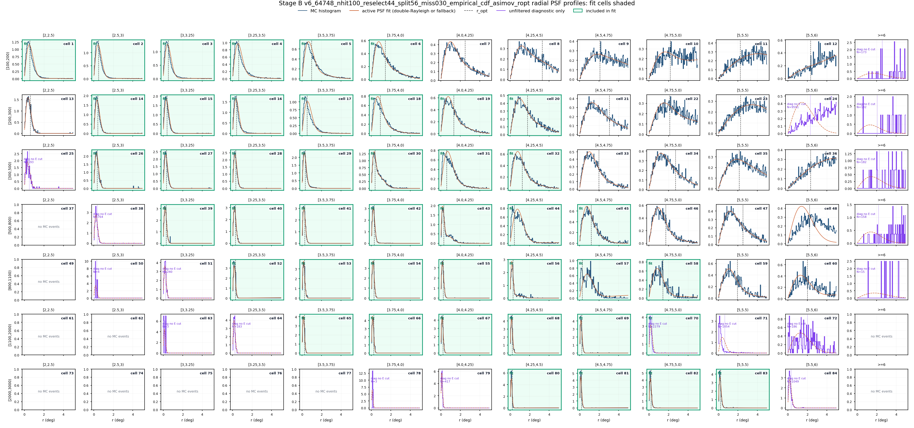
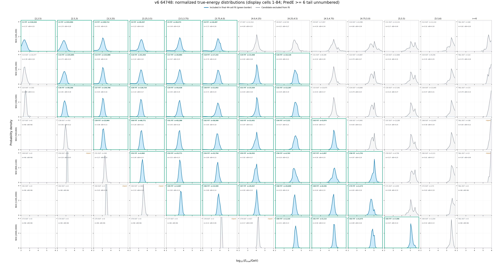
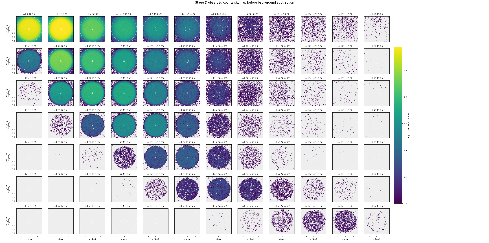
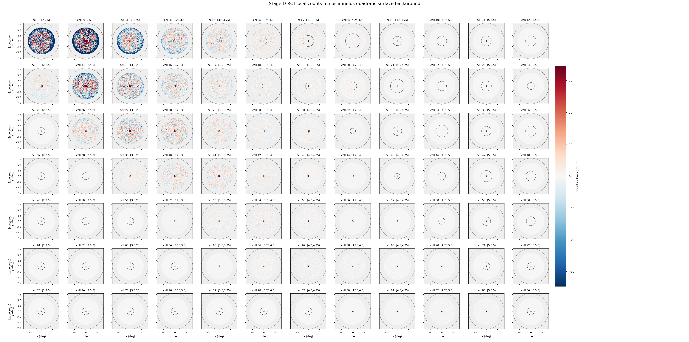
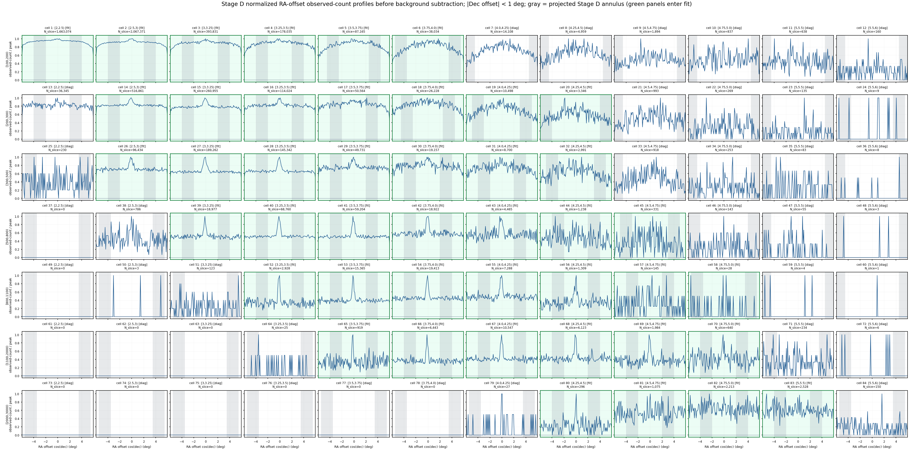
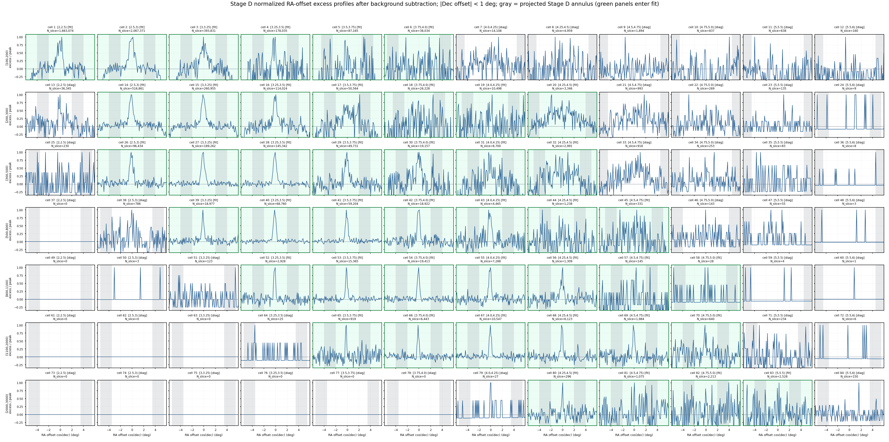
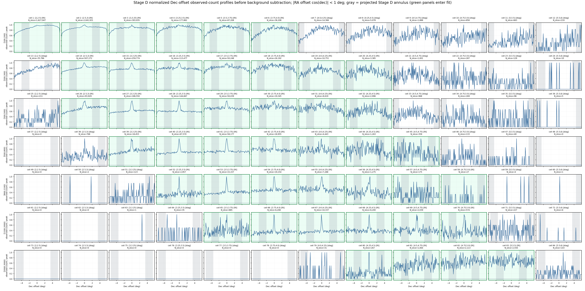
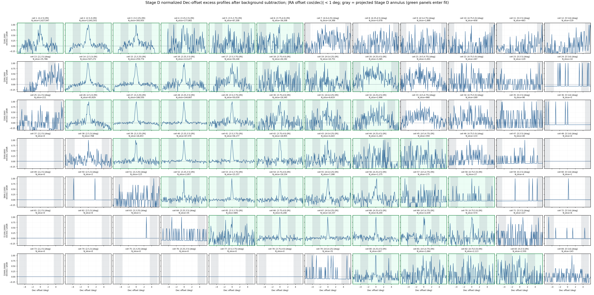
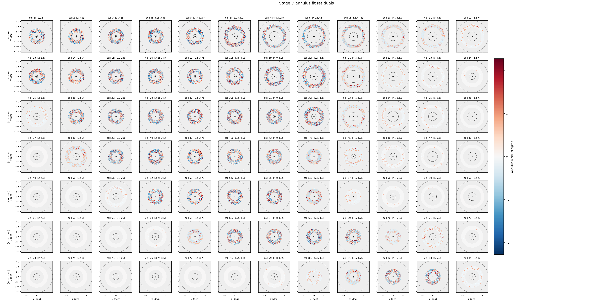
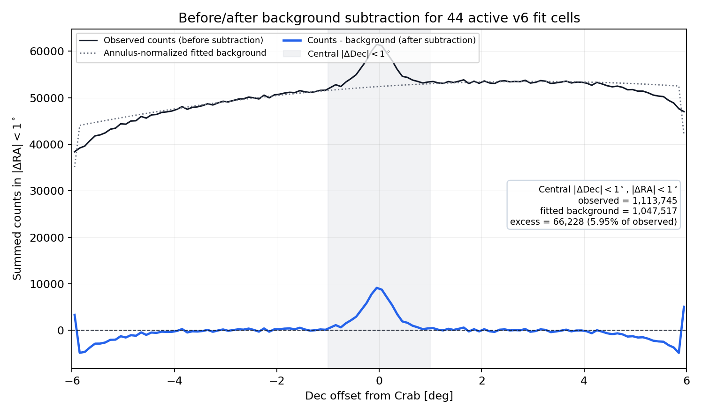
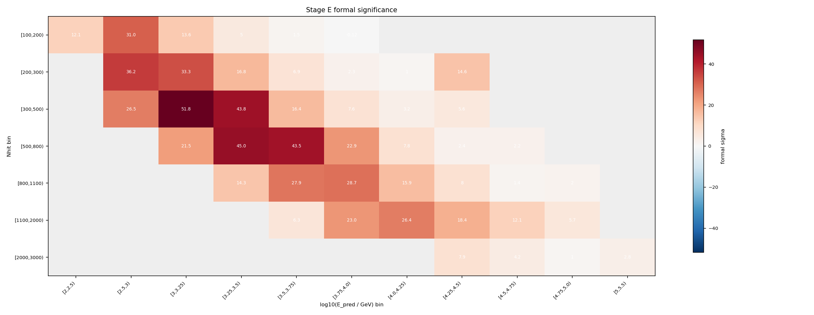
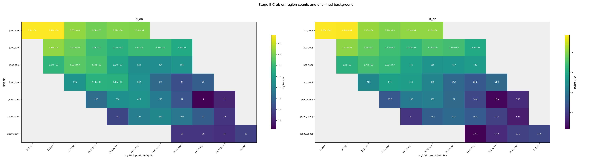
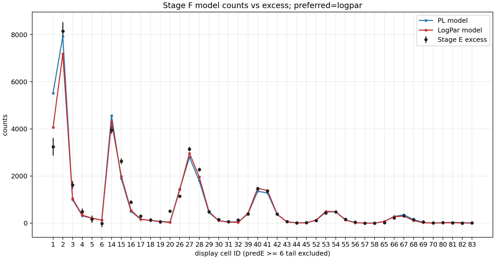
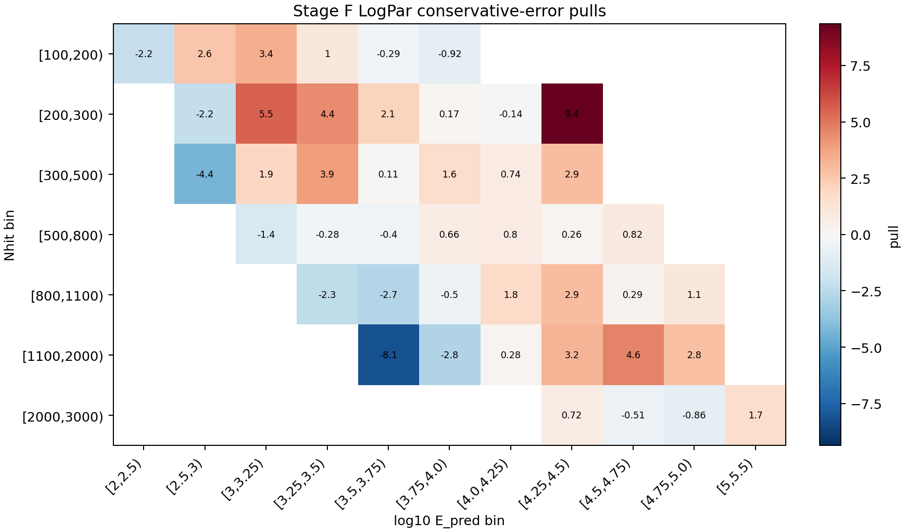
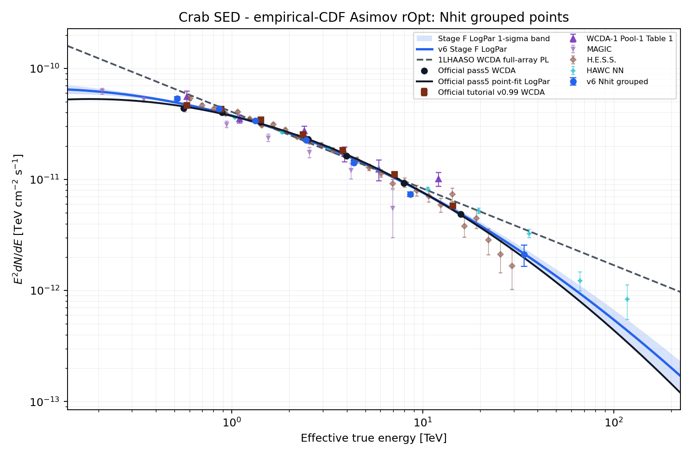
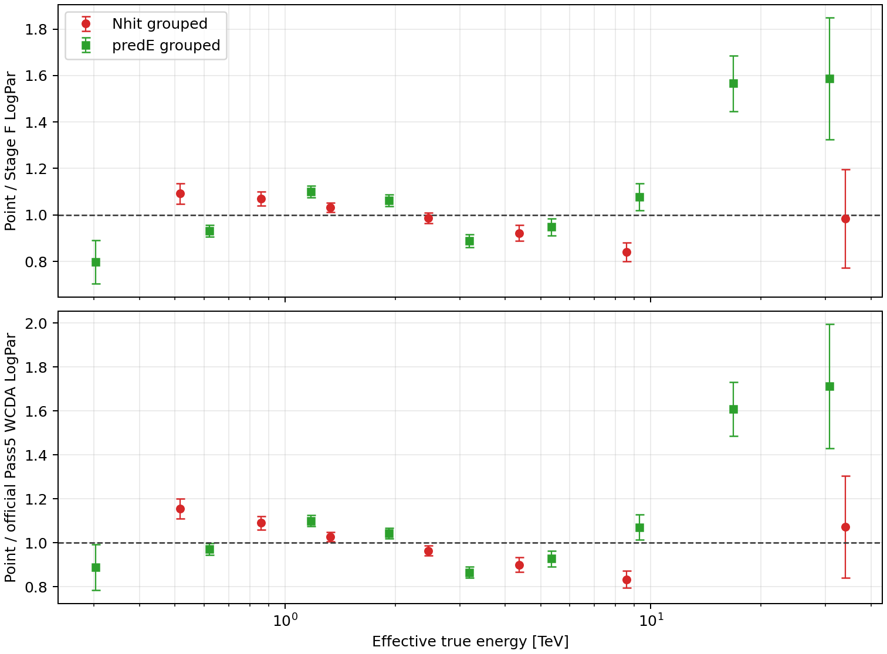
Stage F Fit
Stage F uses the frozen final selector and Scheme R - Empirical-CDF Asimov-rOpt with Grid-Free Poisson Background. The 44 selected cells use full cumulative MC response and the actual Stage D background to choose the smallest radius within 99% of maximum Asimov significance. The remaining diagnostic cells retain their prior apertures. Stage A is rebuilt with mc_dangle <= r_opt; Stage E containment is 1, so aperture efficiency enters the SED exactly once. The preferred model recorded by Stage F is logpar.
| Fit | Valid | chi2/ndof | p | phi0 | gamma/alpha | beta |
|---|---|---|---|---|---|---|
| PL conservative | True | 448.6/42 | 1.818e-69 | 2.0383e-12 | 2.609 | n/a |
| LogPar conservative | True | 369.6/41 | 1.784e-54 | 2.2230e-12 | 2.682 | 0.0981 |
| PL sqrt-N | True | 698.2/42 | 7.836e-120 | 2.0567e-12 | 2.596 | n/a |
| LogPar sqrt-N | True | 556.3/41 | 1.468e-91 | 2.2591e-12 | 2.688 | 0.1089 |
Stage G SED
Stage G freezes the preferred Stage F spectrum with phi0=2.2230e-12, alpha=2.682, beta=0.0981 at 3 TeV. Quality status: passed.
| Nhit group | Cells | E_eff TeV | E2 dN/dE | Err | chi2/ndof |
|---|---|---|---|---|---|
[100,200) | 1;2;3;4;5;6 | 0.5167 | 5.3568e-11 | 2.140e-12 | 20.4/5 |
[200,300) | 15;16;17;18;19;20;21 | 0.858 | 4.3166e-11 | 1.221e-12 | 141.4/6 |
[300,500) | 28;29;30;31;32;33;34 | 1.329 | 3.3720e-11 | 6.900e-13 | 47.19/6 |
[500,800) | 42;43;44;45;46;47;48 | 2.457 | 2.2519e-11 | 5.178e-13 | 3.741/6 |
[800,1100) | 56;57;58;59;60;61;62 | 4.364 | 1.4089e-11 | 5.238e-13 | 20.87/6 |
[1100,2000) | 70;71;72;73;74;75 | 8.583 | 7.3631e-12 | 3.440e-13 | 97.43/5 |
[2000,3000) | 86;87;88;89 | 33.98 | 2.1094e-12 | 4.556e-13 | 4.319/3 |
| PredE group | Cells | E_eff TeV | E2 dN/dE | Err | chi2/ndof |
|---|---|---|---|---|---|
[2,2.5) | 1 | 0.3028 | 4.5579e-11 | 5.353e-12 | 0/0 |
[2.5,3) | 2;15;28 | 0.6217 | 4.2823e-11 | 1.154e-12 | 23.35/2 |
[3,3.25) | 3;16;29;42 | 1.174 | 3.8259e-11 | 8.795e-13 | 32.26/3 |
[3.25,3.5) | 4;17;30;43;56 | 1.925 | 2.8210e-11 | 6.717e-13 | 35.49/4 |
[3.5,3.75) | 5;18;31;44;57;70 | 3.183 | 1.7058e-11 | 5.185e-13 | 61.02/5 |
[3.75,4.0) | 6;19;32;45;58;71 | 5.352 | 1.2366e-11 | 4.776e-13 | 10.27/5 |
[4.0,4.25) | 20;33;46;59;72 | 9.305 | 8.7789e-12 | 4.774e-13 | 2.811/4 |
[4.25,4.5) | 21;34;47;60;73;86 | 16.83 | 7.2143e-12 | 5.546e-13 | 92.69/5 |
[4.5,4.75) | 48;61;74;87 | 30.84 | 3.8000e-12 | 6.265e-13 | 17.52/3 |
[4.75,5.0) | 62;75;88 | 57.99 | 1.1397e-12 | 6.817e-13 | 10/2 |
[5,5.5) | 89 | 101.4 | 4.8186e-12 | 2.556e-12 | 7.5471e-32/0 |
Metadata Audit
Main-input metadata files were scanned for legacy cache/model path tokens. Status: passed.
Final v6 Fit Parameters
The preferred conservative-error fit is logpar at pivot energy 3 TeV, using dN/dE = phi0 * (E/E0)^[-alpha - beta * ln(E/E0)].
| Parameter | Best fit +/- 1 sigma | Unit |
|---|---|---|
phi0 | 2.2229582e-12 ± 3.571983e-14 | TeV^-1 cm^-2 s^-1 |
alpha | 2.68247 ± 0.0186296 | dimensionless |
beta | 0.09809611 ± 0.013562 | dimensionless |
| Metric | Value |
|---|---|
| Fit valid | True |
| chi2 | 369.6357 |
| ndof | 41 |
| chi2/ndof | 9.015505 |
| p-value | 1.783828e-54 |
| Delta chi2 (PL - LogPar) | 78.9589 |
| Physical flux status | ok |
ok, but chi2/ndof=9.0155 and p=1.7838e-54 indicate poor global goodness of fit.